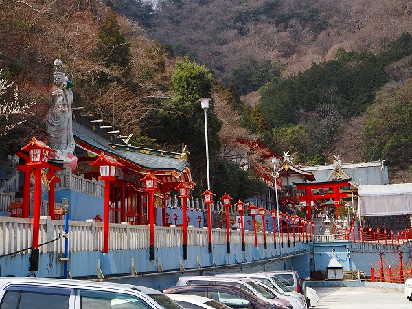
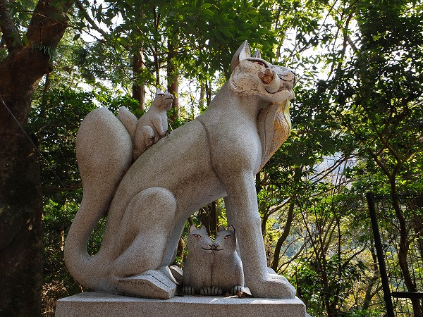
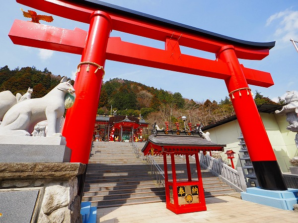
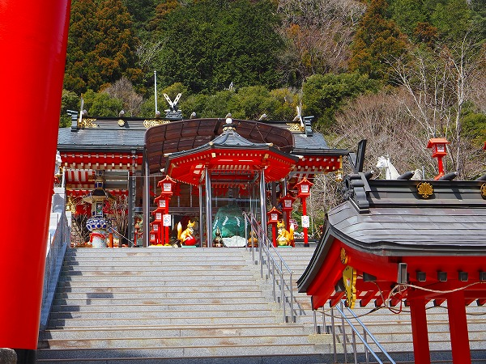

先日、
加波山の神社にその名が記されていた
箱根大天狗神社。
随分前に訪れた事があったが、加波山訪問の際、最近どうなったか気になったので久し振りに訪れてみることにした。
場所は箱根の山中。
とはいえ箱根湯本から元箱根港行きのバスの道中にあるので、この大鳥居くらいは御覧になった方も多いはず。
この神社はその名の通り、
神仏習合の山岳信仰系の神社だ。
日本中の山で修業をした教祖が加波山で修行を仕上げた後、昭和55年にこの地に神社を開いたという。
ああ、だから加波山に大きく関与しているんだね。
ここが
箱根大天狗神社である。
赤い鳥居には
天使がいるぞ。
何だ？
鳥居の先には山門がある。
ここにも
天使チックな人形が。
境内の案内図。
左下に山門が見える。
山門を潜ると鳥居が現れる。

その奥には大仏さんがおわす。
大仏さんは青い衣にピンクの蓮華座という
かなり前衛的な出で立ち。
もう、この大仏さんだけでうっとりですよ。
脚立が架かっており、その気になれば蓮華座の上まで登ることが出来る、のか？
この門から先は撮影禁止なので、ギリ手前から撮らせてもらいましたよ。
門の奥には幼神（水子）を祀る本宮があり、
それはそれは凄い事になっている。
凄い量のスナック菓子がうず高く積まれており、幼神の霊を慰めている。
そして加波山神社同様、
メタリックな塗装のド派手な装飾で覆われていた。

他にも様々な信仰施設がたくさんあるので気になる人は是非実際に行って欲しい。
危険性は全然感じなかったので、箱根に遊びに行く人はついでに寄ってみたらいいよ。
特に
当サイトの愛読者であれば大大満足すると思う。
そうでない人には微妙かも知れないけど。
で、その箱根大天狗神社の先にこれまた派手な神社がある。
箱根天聖稲荷大権現神社という場所だ。
平たく言うとお稲荷さんなのだろう。
平成18年に完成した比較的新しい神社だ。

入口には狐の石像が。
坂を下っていくと本殿の一部が見えてくる。
ここもまた大天狗神社によく似た
プラメタリックな感じの装飾で覆われている。
おおお、なんか凄そう！
参集殿、とは講中の人が休むスペースなのだろうか。
残念ながら誰もいなかった。
境内の壁の縁には
狐が延々と並んでいる。
一体何匹いるのやら。
一体一体ポーズが違う。
この狐もまたカラーセンスが一寸違う気がする。

この神社の由緒が記されていた。
文末には箱根大天狗神社内箱根聖天大権現神社とある。
2～300ｍ程離れていて、道向かいだが神社内、という解釈なのか。

立派な赤鳥居の先にはまたしてもド派手な社殿が並んでいる。

鳥居の先、階段の途中からは撮影が出来ないので許容範囲ギリギリのところから撮影させていただきますよ。
赤い軒裏とステンレスの柱とガラスの組み合わせはこれまでの伝統的な宗教建築とは明らかに違うデザインセンスだ。
撮影可能な範囲でお伝えできるのはここまで。
この奥には
巨大な狐に乗った神像などがある。
さらにお菓子が大量に奉納されている祠（お堂？）や何故かファンシーグッズや陶器などがたくさん並んだ建物など…なんか凄い事になってます。
ここもまた
珍寺舎弟の諸君であれば大いに楽しめる場所だと思うゾ！
このような施設に関して色々な意見はあろうが、私は個人的に嫌いじゃないです。
あくまでもビジュアル面では、ね。
教義の正統性とかそういうのはこのサイトでは問うつもりはないんで、その辺は各自とことんお調べになってくださいませ。
鳥居脇にあった大きな石燈籠。

足元の部分に宝石（ガラス玉？）が無造作に置かれてました。
で、次にお邪魔したのは
浄土金剛宗天聖院。
ここは大天狗神社の別当として平成6年に建立された。
こちらも内部の撮影は禁止なので外側から失礼。
以前来たときは「信徒以外立入禁止です！」とガードが堅かったのだが、今は特に参拝が制限されている様子はなかった。
御簾の奥に見える本堂はかなりの重装備だ。
欄間に鬼と猿の彫像が施されていたり、とにかく派手。
境内には金色の五重塔や巨大な五輪塔、大きな観音像や仁王像が所狭しと並んでいるのだ。
特に凄かったのは大きな
孔雀の船。
ボートほどの大きさの船は舳先が孔雀の頭で、マストのようなものがある。
甲板には龍がうねり、その上に観音様が乗っているという
かなり奇天烈な船だった。
船の後には天狗も乗っている、そしてもちろんド派手。
てなわけで箱根の3つのド派手な寺社巡りは終了。
どこも
装飾が独特の美意識で統一されていた。
少し目がチカチカしてきたよ…。
おまけ
天聖院より数百メートル東側にも消えかけた大天狗神社の看板があった。
後日グーグルマップで確認すると駐車場と建物が撤去された跡があった。
いったい何があったのだろう…
※
大天狗山神社のサイトに撮影禁止エリアの画像もあるので、そちらでめくるめく世界をお楽しみください。